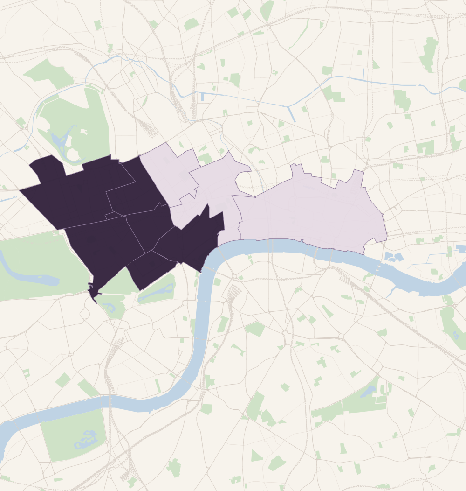
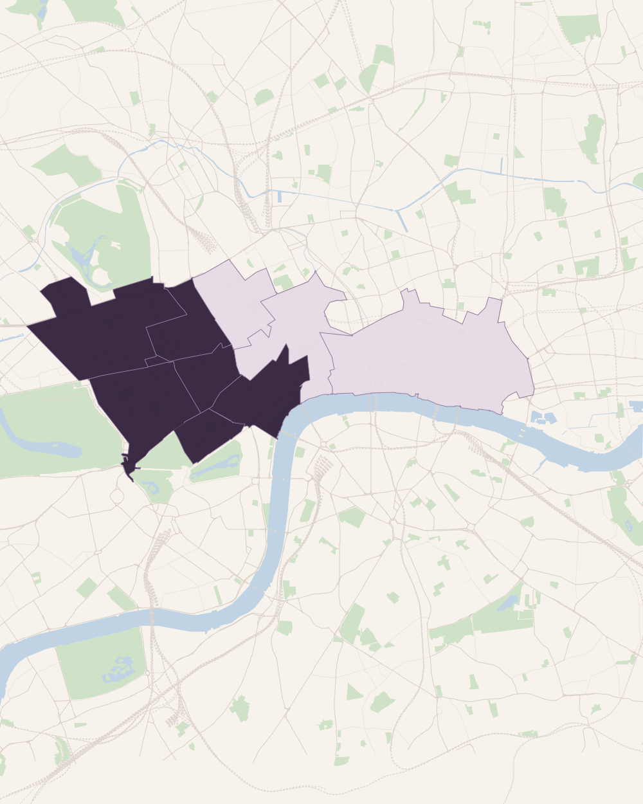
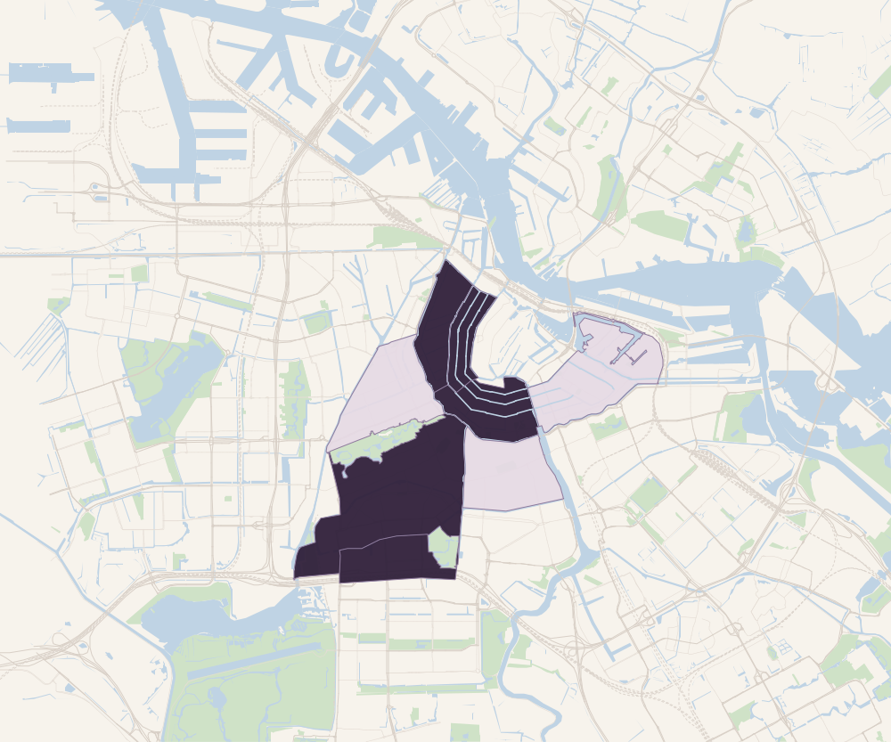
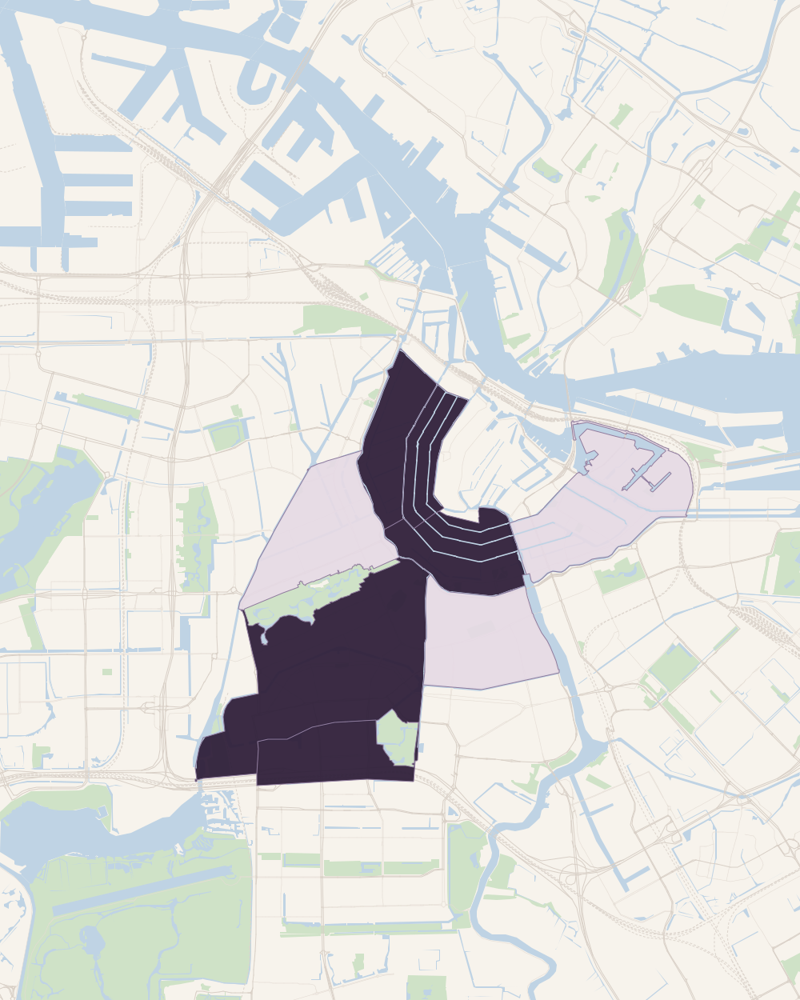

投資家の立場から。
欧州不動産を、取引そのものではなく、投資家の目的と意思決定を起点に考えます。
REIWAの役割
海外不動産の保有には、
海外不動産の保有には、
一貫した視点が必要です。
海外資産の取得は、投資の一部にすぎません。当初に定めた目的と判断基準は、投資分析、実行、そして数年にわたる保有期間を通じて、一貫して保たれる必要があります。
投資方針
投資目的、投資基準、意思決定の要件。
投資家が何を実現しようとしているか、資金をどのように投じるか、どの条件を満たす必要があるかを起点とします。
現地との連携・調整
案件の発掘、デューデリジェンス、資金調達、取得。
各案件は、機会があるからではなく、当初の投資方針に照らして評価し、調整します。
保有期間中のモニタリング
事業計画、報告、保有に関する重要な判断。
取得後も同じ投資家の視点を保ち、事業計画の進捗、重要な判断、そして出口までを支援します。
注力市場
二つの市場に、深く向き合う。
ロンドンとアムステルダム。広く地域を網羅するのではなく、深く理解した二つの市場で、再現性のある判断を積み上げます。


- 中核注力エリア
- 選択的な注力エリア
- その他のエリア
注力エリアは目安であり、境界は概略です。

- 市場の特性
- 世界有数の不動産投資市場。豊富な取引量、幅広い買い手層、成熟した専門家ネットワーク。
- 注力領域
- テナント需要と流動性を理解できる、プライムセントラルおよび確立した商業エリアに絞り込みます。
- 注力エリア
- Mayfair · St James’s · Marylebone · South Kensington · Chelsea · Soho / Fitzrovia · City Core · Farringdon / Clerkenwell · Shoreditch / City Fringe
- 適合する理由
- 機関投資家層の厚み、高い取引流動性、そして長期にわたる買い手層の広さ。


- 中核注力エリア
- 選択的な注力エリア
- その他のエリア
注力エリアは目安であり、境界は概略です。

- 市場の特性
- 限られた供給、国際的な企業需要、高い都市競争力。長期保有を検討できる欧州主要都市の一つ。
- 注力領域
- 希少性、建物の個性、継続的なテナント需要、そして明確な価値創出の余地が投資判断を支える中心エリア。
- 注力エリア
- Canal Belt · Jordaan · Museum Quarter / Oud-Zuid · Historic Centre · Zuidas
- 適合する理由
- 希少性、独自性のある物件、そして選択的なリポジショニングの機会。
対象投資家
長期的な資本とともに。
Reiwa Capitalは、欧州不動産を直接かつ適切な統制のもとで保有することを検討する、日本の経験豊富な投資家とともに取り組みます。
日本の事業会社
自己資金による、選定した欧州不動産への戦略的な投資。
ファミリーオフィス
秘匿性、透明性、そして統制を伴う長期保有。
機関投資家
選定した欧州の投資機会への、体系的なアクセス。
プライベート投資家
クロスボーダー投資を検討する経験豊富な投資家による直接保有。